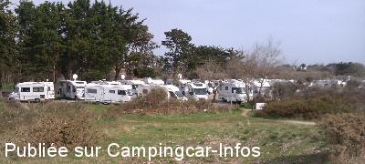
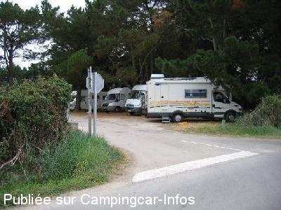
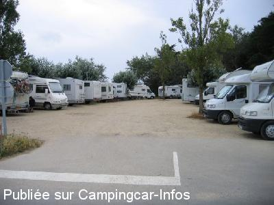

APN = Parking toléré jour/nuit de :
LOCMARIAQUER
(N° 488)
Accès/adresse :
Route de Kerhéré
Aire des Pierres Plates
56740 LOCMARIAQUER
Aire des Pierres Plates
56740 LOCMARIAQUER
Latitude : (Nord) 47.55722° Décimaux ou 47° 33′ 25′′
Longitude : (Ouest) -2.94862° Décimaux ou -2° 56′ 55′′
Tarif : Gratuit
Services :
Autres informations :
20 emplacements
Stationnement limité 24 heures
Tél : +(0)297 573 305
http://www.locmariaquer.fr/office-de-tourisme-page-55-rub-7.html
Plage à proximité

Le 31/03/2014 par Steff 22

Le 28/07/2008 par Oliv74

Le 28/07/2008 par Oliv74
de
alex69
le 29/03/2015 :
aire complete et entassement garantie,il faut aimer,le camping de la falaise a cote nous a satisfait
aire complete et entassement garantie,il faut aimer,le camping de la falaise a cote nous a satisfait
de
Eriba693
le 02/11/2014 :
De passage sur Locmariaquer en octobre 2014
Aire simple pour une vingtaine de CC et presque toujours compléte
Pas de services
Proximité de la mer à 150 m et chemin de promenade avec le chemin côtier.
Calme le nuit et pas éclairé
De passage sur Locmariaquer en octobre 2014
Aire simple pour une vingtaine de CC et presque toujours compléte
Pas de services
Proximité de la mer à 150 m et chemin de promenade avec le chemin côtier.
Calme le nuit et pas éclairé
de
JCL
le 17/09/2014 :
Sommes passés une nouvelle fois pour voir. Rien n'a changé, un entassement qui n'a rien d'attirant. Ce n'est pas notre conception du camping cariste mais à chacun ses libres choix. Le camping de la falaise à quelques metres offre un vrai accueil digne de ce nom pour un tarif très acceptable.
Sommes passés une nouvelle fois pour voir. Rien n'a changé, un entassement qui n'a rien d'attirant. Ce n'est pas notre conception du camping cariste mais à chacun ses libres choix. Le camping de la falaise à quelques metres offre un vrai accueil digne de ce nom pour un tarif très acceptable.
de
Steff22
le 31/03/2014 :
Aire complète en cette période de grande marée ,stationnement limité à 24 h mais pas respecté,nous nous sommes donc installés sur le camping les falaises avec au moins 60 CC pour un tarif très correct et très calme.
Aire complète en cette période de grande marée ,stationnement limité à 24 h mais pas respecté,nous nous sommes donc installés sur le camping les falaises avec au moins 60 CC pour un tarif très correct et très calme.
de
Julien85
le 12/10/2013 :
De passage le 08 Octobre 2013, passé 2 nuits, aire de repos toujours gratuite.
Assez complet, selon le stationnement de certains!
Le parking voiture est bien pourvu d'une barre de hauteur.
De passage le 08 Octobre 2013, passé 2 nuits, aire de repos toujours gratuite.
Assez complet, selon le stationnement de certains!
Le parking voiture est bien pourvu d'une barre de hauteur.
de
Marc
le 06/05/2013 :
De passage mi-mai 2013.
Le week-end, les 2 parkings étaient archi-complets, y compris celui en principe réservé aux voitures; des travaux sont en cours pour la réaménager, installation prévue d'une borne de service et d'une barrière, l'aire ne sera plus gratuite, affaire à suivre.
De passage mi-mai 2013.
Le week-end, les 2 parkings étaient archi-complets, y compris celui en principe réservé aux voitures; des travaux sont en cours pour la réaménager, installation prévue d'une borne de service et d'une barrière, l'aire ne sera plus gratuite, affaire à suivre.
de
thierry
le 23/05/2012 :
Bonjour
Comme signalé auparavant le parking est réservé au camping car mais des voitures viennent se garer .Debut mai lors de notre passage les places étaient cher .Faire attention au poteau de l'entrée un campingcariste y laissé le dessous du marche bien ded son intégral.Le calme ,les dolmens et la plage a porté.
Bonjour
Comme signalé auparavant le parking est réservé au camping car mais des voitures viennent se garer .Debut mai lors de notre passage les places étaient cher .Faire attention au poteau de l'entrée un campingcariste y laissé le dessous du marche bien ded son intégral.Le calme ,les dolmens et la plage a porté.
de
FordTransit 64
le 20/08/2010 :
Super ! Aire sous les pins, nous avons dû batailler pour avoir une place! Le parking est indiqué interdit aux voitures mais certaines viennent sur le parking.
Super ! Aire sous les pins, nous avons dû batailler pour avoir une place! Le parking est indiqué interdit aux voitures mais certaines viennent sur le parking.
de
bob
le 27/08/2009 :
Parking complet mais cependant très calme. Ronde régulière de la gendarmerie.
Parking complet mais cependant très calme. Ronde régulière de la gendarmerie.
de
Jean CRENES
le 11/03/2009 :
Arrêt pour une nuit fin février, endroit calme, proche de la mer, possibilité de balade sympa le long de la côte.
Arrêt pour une nuit fin février, endroit calme, proche de la mer, possibilité de balade sympa le long de la côte.
de
herderien
le 22/09/2008 :
Nous y sommes passés en août : aire très bien située pour le calme, la pêche, la baignade et les promenades. Mais là encore, la municipalité devrait soigner notre accueil : l'aire est en terre battue et quand il pleut il faut slalommer entre les grosses flaques d'eau. En saison arriver de bonne heure.
Nous y sommes passés en août : aire très bien située pour le calme, la pêche, la baignade et les promenades. Mais là encore, la municipalité devrait soigner notre accueil : l'aire est en terre battue et quand il pleut il faut slalommer entre les grosses flaques d'eau. En saison arriver de bonne heure.
de
fau
le 27/08/2007 :
Ne pas espérer de place sur le parking en plein mois d'août. Il est surchargé !!! Aucune autre possibilité de stationner ailleurs sur la commune. Tous les autres endroits sont interdits aux CC même dans la journée. La borne de services n'est pas au même endroit. Elle est situé près du camping municipal à moins d'1 km du parking.
Ne pas espérer de place sur le parking en plein mois d'août. Il est surchargé !!! Aucune autre possibilité de stationner ailleurs sur la commune. Tous les autres endroits sont interdits aux CC même dans la journée. La borne de services n'est pas au même endroit. Elle est situé près du camping municipal à moins d'1 km du parking.
de
Thomas PARAYRE
le 27/07/2006 :
Tres belle aire, proche de la mer et d'un dolmen. Beaucoup de monde l'été. Très sympa et à l'abri du vent. GRATUIT !
Tres belle aire, proche de la mer et d'un dolmen. Beaucoup de monde l'été. Très sympa et à l'abri du vent. GRATUIT !
de
Roger van Damme
le 26/03/2004 :
Reeds verschilende malen deze plaats aangedaan in de maand september.
Zeer prachtige plaats in de schaduw, soms druk voornamelijk in het WE, meer dan dertig campingcars, dan is het wel zeer vol.
De serviceplaats op een paar honderd meter.
Reeds verschilende malen deze plaats aangedaan in de maand september.
Zeer prachtige plaats in de schaduw, soms druk voornamelijk in het WE, meer dan dertig campingcars, dan is het wel zeer vol.
De serviceplaats op een paar honderd meter.